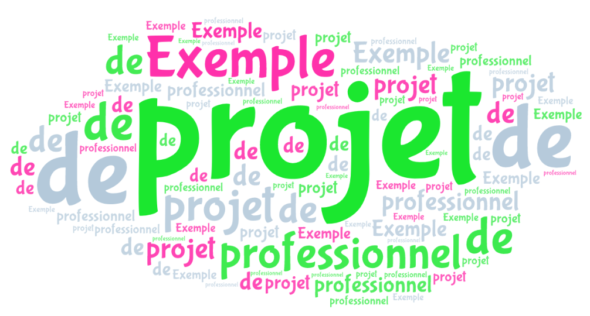

P.Moreauex
Licence d'Informatique
UV Projet
2004/2005
Ce document est un exemple et un modèle pour la rédaction de rapport de projet de l’UFR de
Sciences Exactes et Naturelles de l’Université de Reims Champagne-Ardenne. On explique la structure d’un rapport et on montre comment utiliser les particularités du système PJR.
Mots-clés : bibliographie, conclusion, introduction, projet, résumé.
This document is an example and a model for writing a report project at the "UFR de Sciences
Exactes et Naturelles" of the "Université de Reims Champagne-Ardenne" (France). It contains an
explanation of the report structure and shows how to use the specific facilities of the PJR system.
Key words: abstract, bibliography, conclusion, introduction, project.